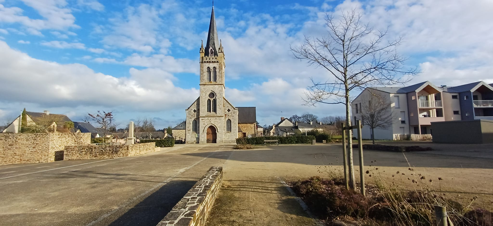

Municipales 2026 • Chasné-sur-Illet
Réussir Chasné, ensemble.
Une liste sans étiquette, ancrée localement, pour des projets maîtrisés, transparents et utiles au quotidien.
Coin presse
Dernières parutions

Municipales 2026 — Troisième candidat à se présenter à Chasné-sur-Illet
Une démarche sans étiquette
Une équipe pluraliste, de nouveaux habitants comme des anciens, des jeunes et des aînés, mobilisés depuis septembre en ateliers.
Pourquoi se présenter ?
« La baisse de la participation, les démissions en cascade et le revote en 2025 incitent à présenter une liste sans étiquette en 2026. C’est maintenant ou jamais. »
Objectif : remettre les Chasnéens et les Chasnéennes au cœur du projet, de la naissance au grand âge, en encourageant le tissage de nouvelles solidarités.
Chasné-sur-Illet
Quelques images de la commune (temporaires, tu remplaceras par les vraies).

L’église
Un repère emblématique du centre-bourg.

La mairie
Le cœur administratif de la commune.

Parc & étang
Un espace de respiration et de promenade.
Rencontrons-nous
Consulte les dates de réunion et les temps d’échange. Tu peux aussi nous écrire en 30 secondes.